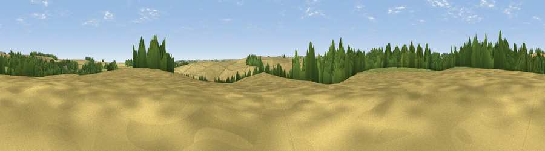

Viewpoint near Louth
#41816 in England · top 85% of its area beats it · near Louth · path 214 mWhere it is
The exact computed spot (TF 29103 87489). Click the marker for map links.
Public access: the nearest public right of way is about 214 m away — the final stretch may cross private land. Computed from Natural England's CRoW access layer and OpenStreetMap rights of way — not the legal definitive map. Always verify locally.
The view, rendered

A 360° render of this exact spot computed from the terrain model, tree cover and land cover — summer colours, afternoon light, calibrated against photographs of famous viewpoints. Real trees, hedges and buildings will differ in detail.
The panorama
Grey silhouette: terrain skyline in each direction (720 bearings, Earth curvature and refraction included). Dashed green: skyline with trees (+15 m) and buildings (+8 m) as obstacles. Blue strip: how far the ground is visible on each bearing.
Where the view opens
Wedge length = distance to the farthest visible ground on that bearing (vegetation-aware). Rings at 10, 25 and 50 km.
What fills the view
64% cropland · 21% grassland · 15% woodland
Angular shares of the visible panorama (visual magnitude), not map area. Landscape diversity 0.40 (0–1 Shannon).
Key numbers
More beautiful places nearby
The staircase of upgrades: each row has a higher view potential than everything closer. Driving times are estimates from straight-line distance, calibrated against real road routing — check an actual route before setting out.
| Place | Direction | Drive | Score |
|---|---|---|---|
| Flint Hill | S · 2 km | ~4 min | 51.9 |
| Viewpoint near Ludborough | N · 6 km | ~13 min | 53.5 |
| Viewpoint near Goulceby | SSW · 7 km | ~15 min | 56.9 |
| Viewpoint near Wold Newton | NNW · 10 km | ~20 min | 57.3 |
| Viewpoint near Tetford | SSE · 12 km | ~23 min | 58.0 |
| Warden Hill | SSE · 15 km | ~27 min | 59.5 |
| Viewpoint near Claxby | WNW · 18 km | ~31 min | 61.7 |
| Viewpoint near Claxby | WNW · 18 km | ~31 min | 64.9 |
53.36850, -0.06111 · source: osm peak · position refined by local search. Computed location — check access rights before visiting.